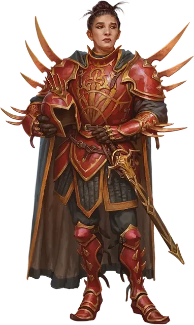

Капитан Гармониума
Harmonium Captain
Маленький или Средний Гуманоид, любое мировоззрение

Класс Доспеха 20 (латы, щит)
Хиты 110 (17к8 + 34)
Скорость 30 футов
| мод | спас | ||
|---|---|---|---|
| СИЛ | 19 | +4 | +7 |
| ЛОВ | 10 | +0 | +0 |
| ТЕЛ | 14 | +2 | +2 |
| мод | спас | ||
|---|---|---|---|
| ИНТ | 12 | +1 | +1 |
| МДР | 16 | +3 | +6 |
| ХАР | 16 | +3 | +3 |
Навыки Восприятие +6
Иммунитет к состояниям испуг, очарование
Чувства пассивное Восприятие 16
Языки Общий плюс один язык
Опасность 8 (3900 опыта)
Бонус мастерства +3
Особенности
Аура командующего. Союзники в пределах 30 футов от капитана невосприимчивы к состоянию очарованный и испуганный. Эта аура подавляется, пока капитан остаётся недееспособным.
Действия
Мультиатака. Капитан совершает три атаки Клинком Гармониума. Он так же может использовать Повеление, если оно доступно.
Клинок Гармониума. . Рукопашная атака оружием: +7 к попаданию, досягаемость 5 футов, одна цель. Попадание: 9 (1к10 + 4) колющего урона плюс 10 (3к6) урона электричеством.
Повеление (перезарядка 5-6). Капитан устно приказывает трём существам, которых он может видеть в пределах 60 футов. Этот магический приказ должен заключаться в том, чтобы предпринять какое-либо действие или воздержаться от его совершения (например, “Бросьте своё оружие”).
Цель должна преуспеть в спасброске Мудрости Сл 14, иначе станет очарованной на 1 минуту, в течение которой она выполняет приказ капитана. Эффект заканчивается досрочно, если цель получает урон или успешно выполняет команду. Цель автоматически преуспевает в спасброске, если команда непосредственно вредит ей самой, например, приказывает ей идти в огонь.
Существо может повторять спасбросок в конце каждого своего хода, оканчивая на себя действие эффекта при успехе.
Описание
Капитаны Гармониума возглавляют патрули миротворцев по всему Сигилу. Они поддерживают своих подчиненных в бою и своими командами обрушивают авторитет Гармониума на подозреваемых.